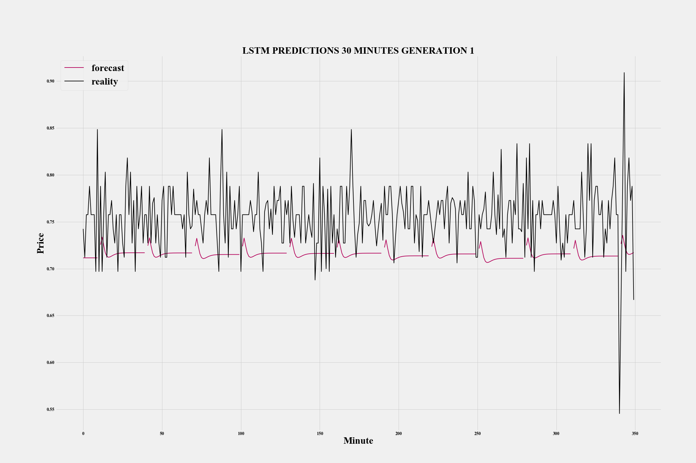

Current Projects
Generating Synthetic Healthcare Data
Visualizing and Forecasting Financial InstrumentsThis project was the result of my work during the Sanger Research Progam from Summer 2018 to Spring 2019
Studying under Dr. Jermaine Moulton, I developed alorithmic forecasting strategies in Python
Desgined multi-headed convolutional neural networks and GRU networks to forcast multi-dimensional time series data
Used IEX's free data API (No longer free unfortunately), to gather minute interval data from 3 month periods
In total, used data from 61 companies classified as either energy or uitilities by the S&P 500
Forecasted stationary and non-stationary time-series data at intervals of 5, 10, 30, and 60 minutes
Findings showed that these networks forecasted stationary data at about the same level as a moving average
Below are a few visualizations of the results we produced during our research.
this should be redone

You can find an example of these types of illustrations here.
Visualizing and Forecasting Financial Instruments
Visualization of forecasts made by two different architectures

Visualization of forecasts made on stationary data
Raspberry Pi Project
I am using my Raspberry Pi as a music player and a DNS adblocker for my home network.